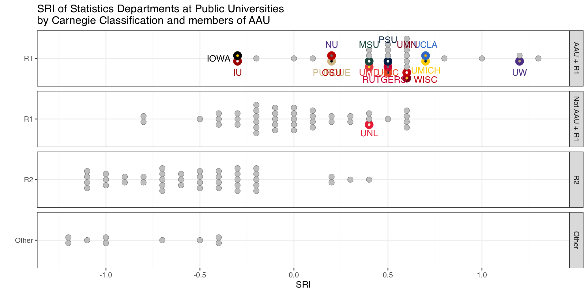
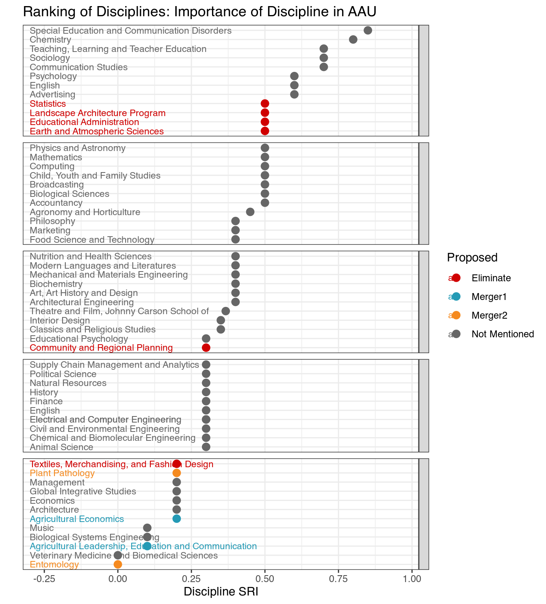
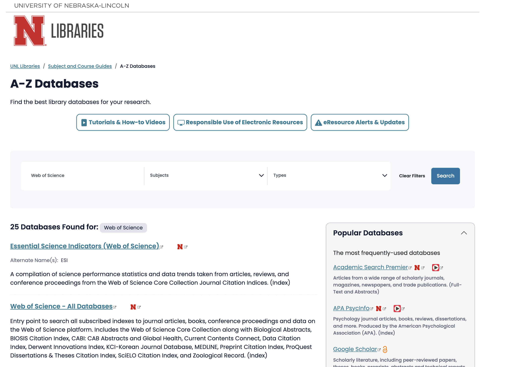

To the Executive Leadership Team and data analytics team
Thank you for your response to our questions regarding issues with some of the metrics and the quality of the data that has led to the proposal for Budget Cuts at UNL. Let me respond to some of the most egregious missteps that we see in the current approach.
The metrics calculations cannot all be released in full, given the unprecedented size and complexity of these data.
Metrics calculations are (or should be) separate from the data. You can think of the metrics calculations as the formulas connecting and combining cells in spreadsheets. The data are the numbers in the cells.
We acknowledge that budget cuts and strategic alignments are a hard problem. Unprecedented? - this current approach is certainly unprecedented, but the problem is not. Neither is the size of the data, at least for statisticians and computer scientists.
The complexity of the data can always be broken down by following the hierarchy that the data encodes. Giving each unit access to its individual level data - i.e. the performance, publications, grants, books, citations, and courses attributed to each faculty member over the review period, as well as the numbers for each of the course sections that went into the instructional scores, would enable each unit to vet the correctness of the data on which they are evaluated.
The most probable reason that you are not willing to give this level of detail to the units is that it will demonstrate the extent of the dramatic problems that are hiding within the averages you provided to the units. Not aligning individual faculty members with their performance is leading to a systematic under count of a unit’s actual research performance compared to the budgeted costs and ‘average FTE’. And, as detailed below, the impact of this undercount is uneven i.e. undercounting is more detrimental to smaller units.
Choosing ten years as a review period for research performance is a long time.
In the Statistics Department, this means that only three faculty members (out of an ‘average’ FTE of 12.3) contributed data across the full time frame. In that time frame, the Department has seen faculty retirements, new faculty hires, and also has had faculty leave for other universities. All of those individuals are counted in the denominator of ‘average FTE’. None of their performance measures are included in your numerators. Besides the disrespect of not acknowledging the contributions these faculty members, this approach skews the numbers against small departments.
We have heard that ‘every unit is treated the same’ in response to our multiple complaints (identified issues with the metrics and the analysis are available for reference). The impact of this treatment affects different sized units differently. It is not surprising then, that out of the ten smallest units at UNL that have an SRI, six were targeted by the allegedly normalized metrics. Ask your friendly neighborhood statistician how likely this happens by chance (they can even give you a p-value). There is highly significant evidence that these metrics are not properly normalized, so that the elimination of small departments is significantly more likely than large departments using the approach UNL administration described.
Bad Decisions Imperil Public Higher Education in Nebraska
At this late stage in the process, the metrics themselves won’t be changed.
The unwillingness to see that mistakes have been made in the process is a disservice to UNL, the Nebraska University System and ultimately, the people of Nebraska.
Let me explain why the current proposal is extremely short-sighted, using the example of the Statistics Department. I will also use the SRI (Scholarly Research Index) as the main measure, since it represents an evaluation for the research performance of each department by independent, qualified researchers at Academic Analytics who understand the importance of a reference population.
Nationwide, there are 157 entities that Academic Analytics recognizes as peers to the UNL Statistics Departments.
Among these peers, UNL Stats ranks 39th (on par with 8 other departments). When reducing the number of peer departments to the ones at public universities, the rank of the UNL Stats department becomes 27th out of 123, putting UNL Stats at the 78.9th Percentile.
When comparing the Statistics Department to its Public Peers at AAU, the rank of UNL Stats is 22 out of 33.
The UNL Stats score used in the budget process comes out at -.1 (it should be 0 but - for statistics at least - whoever put the data together forgot to also select ‘public’ in the Sector, oops). Compared to other departments at UNL, this is still an OK indicator that the Stats Department is good even for AAU standards.
What has been completely overlooked by the UNL Executive Leadership Team is that this metric can also be used to compare the relative importance of disciplines to the AAU. Using the SRI as the response in a Rasch model … really unimportant details - talk to your friendly neighborhood statistician, if you still can. The idea is that every time there is a test with multiple questions, we can evaluate the difficulty of a question based on the students’ answers.
Similarly, we can evaluate which disciplines are strategically important to AAU based on the SRIs given to each discipline compared to that discipline’s overall SRI. Large differences indicate disciplines in which AAU schools have stronger performing departments than universities nationwide.
And what we see below is that in the strategic alignment of the budget cut process several disciplines that are highly valued at AAU schools are proposed to be eliminated. The Executive Leadership Team’s faulty analysis1 risks the reputation of UNL and the chances that UNL gets back into the AAU. The decisions they made based on this faulty understanding of the metrics will hurt Nebraskans.

We have confirmed that the University Libraries does[sic] not subscribe to InCites or any similar tool
It is quite surprising what one can find when one reads.
From the InCites Benchmarking Analytics, we find that InCites uses Web of Science as its data source.
UNL Libraries provide personal access to Web of Science, thus providing access to the same data used by InCites.

From a statistical perspective, it looks like the same amount of care was given to the assembly of the metrics and the data for the budget cut process at UNL as for the confirmation of no access to InCites. After all, who cares if data is missing as long as it’s missing for all departments?
Footnotes
Or, really, the faulty analysis done by their quantitative dogsbodies, as we’re sure the ELT didn’t analyze the data themselves.↩︎